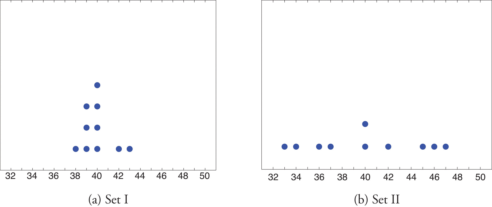
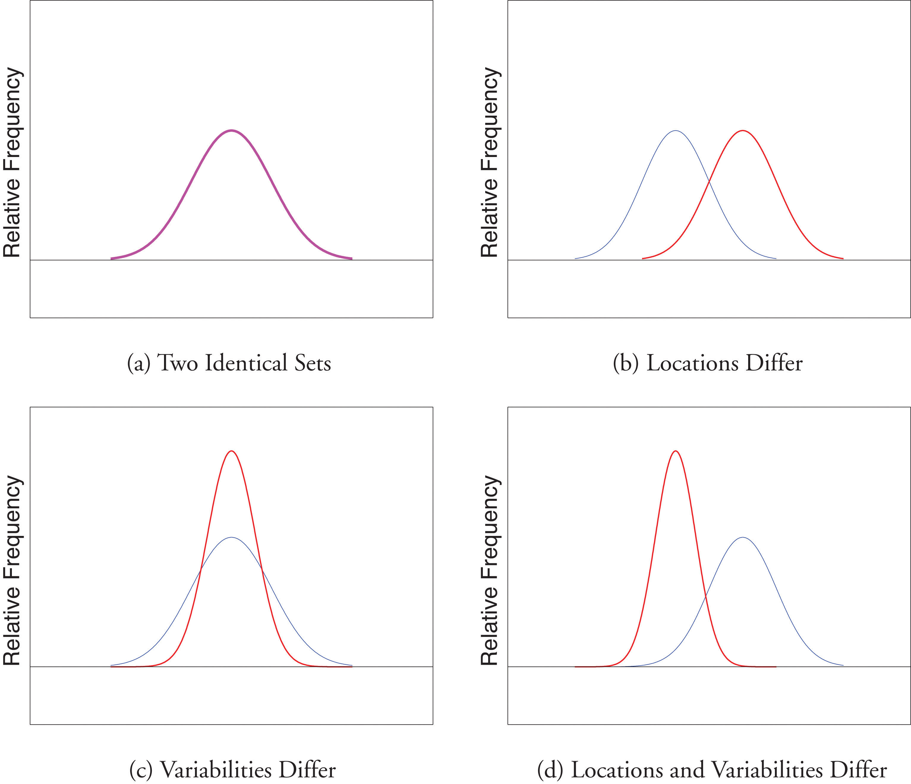

Look at the two data sets in Table 2.1 "Two Data Sets" and the graphical representation of each, called a dot plot, in Figure 2.10 "Dot Plots of Data Sets".
Table 2.1 Two Data Sets
| Data Set I: | 40 | 38 | 42 | 40 | 39 | 39 | 43 | 40 | 39 | 40 |
| Data Set II: | 46 | 37 | 40 | 33 | 42 | 36 | 40 | 47 | 34 | 45 |
Figure 2.10 Dot Plots of Data Sets
The two sets of ten measurements each center at the same value: they both have mean, median, and mode 40. Nevertheless a glance at the figure shows that they are markedly different. In Data Set I the measurements vary only slightly from the center, while for Data Set II the measurements vary greatly. Just as we have attached numbers to a data set to locate its center, we now wish to associate to each data set numbers that measure quantitatively how the data either scatter away from the center or cluster close to it. These new quantities are called measures of variability, and we will discuss three of them.
The first measure of variability that we discuss is the simplest.
The rangeThe variability of a data set as measured by the number of a data set is the number R defined by the formula
where is the largest measurement in the data set and is the smallest.
Find the range of each data set in Table 2.1 "Two Data Sets".
Solution:
For Data Set I the maximum is 43 and the minimum is 38, so the range is
For Data Set II the maximum is 47 and the minimum is 33, so the range is
The range is a measure of variability because it indicates the size of the interval over which the data points are distributed. A smaller range indicates less variability (less dispersion) among the data, whereas a larger range indicates the opposite.
The other two measures of variability that we will consider are more elaborate and also depend on whether the data set is just a sample drawn from a much larger population or is the whole population itself (that is, a census).
The sample variance of a set of n sample data is the number s2 defined by the formula
which by algebra is equivalent to the formula
The sample standard deviationThe variability of sample data as measured by the number . of a set of n sample data is the square root of the sample variance, hence is the number s given by the formulas
Although the first formula in each case looks less complicated than the second, the latter is easier to use in hand computations, and is called a shortcut formula.
Find the sample variance and the sample standard deviation of Data Set II in Table 2.1 "Two Data Sets".
Solution:
To use the defining formula (the first formula) in the definition we first compute for each observation x its deviation from the sample mean. Since the mean of the data is , we obtain the ten numbers displayed in the second line of the supplied table.
Then
so
and
The student is encouraged to compute the ten deviations for Data Set I and verify that their squares add up to 20, so that the sample variance and standard deviation of Data Set I are the much smaller numbers and
Find the sample variance and the sample standard deviation of the ten GPAs in Note 2.12 "Example 3" in Section 2.2 "Measures of Central Location".
Solution:
Since
and
the shortcut formula gives
and
The sample variance has different units from the data. For example, if the units in the data set were inches, the new units would be inches squared, or square inches. It is thus primarily of theoretical importance and will not be considered further in this text, except in passing.
If the data set comprises the whole population, then the population standard deviation, denoted σ (the lower case Greek letter sigma), and its square, the population variance σ2, are defined as follows.
The population variance and population standard deviationThe variability of population data as measured by the number . of a set of N population data are the numbers σ2 and σ defined by the formulas
Note that the denominator in the fraction is the full number of observations, not that number reduced by one, as is the case with the sample standard deviation. Since most data sets are samples, we will always work with the sample standard deviation and variance.
Finally, in many real-life situations the most important statistical issues have to do with comparing the means and standard deviations of two data sets. Figure 2.11 "Difference between Two Data Sets" illustrates how a difference in one or both of the sample mean and the sample standard deviation are reflected in the appearance of the data set as shown by the curves derived from the relative frequency histograms built using the data.
Figure 2.11 Difference between Two Data Sets
The range, the standard deviation, and the variance each give a quantitative answer to the question “How variable are the data?”
Find the range, the variance, and the standard deviation for the following sample.
Find the range, the variance, and the standard deviation for the following sample.
Find the range, the variance, and the standard deviation for the following sample.
Find the range, the variance, and the standard deviation for the following sample.
Find the range, the variance, and the standard deviation for the sample represented by the data frequency table.
Find the range, the variance, and the standard deviation for the sample represented by the data frequency table.
Find the range, the variance, and the standard deviation for the sample of ten IQ scores randomly selected from a school for academically gifted students.
Find the range, the variance and the standard deviation for the sample of ten IQ scores randomly selected from a school for academically gifted students.
Consider the data set represented by the table
Find the sample standard deviation for the data
A random sample of 49 invoices for repairs at an automotive body shop is taken. The data are arrayed in the stem and leaf diagram shown. (Stems are thousands of dollars, leaves are hundreds, so that for example the largest observation is 3,800.)
For these data, ,
What must be true of a data set if its standard deviation is 0?
A data set consisting of 25 measurements has standard deviation 0. One of the measurements has value 17. What are the other 24 measurements?
Create a sample data set of size n = 3 for which the range is 0 and the sample mean is 2.
Create a sample data set of size n = 3 for which the sample variance is 0 and the sample mean is 1.
The sample has mean and standard deviation s = 1. Create a sample data set of size n = 3 for which and s is greater than 1.
The sample has mean and standard deviation s = 1. Create a sample data set of size n = 3 for which and the standard deviation s is less than 1.
Begin with the following set of data, call it Data Set I.
Large Data Set 1 lists the SAT scores and GPAs of 1,000 students.
http://www.gone.2012books.lardbucket.org/sites/all/files/data1.xls
Large Data Set 1 lists the SAT scores of 1,000 students.
http://www.gone.2012books.lardbucket.org/sites/all/files/data1.xls
Large Data Set 1 lists the GPAs of 1,000 students.
http://www.gone.2012books.lardbucket.org/sites/all/files/data1.xls
Large Data Sets 7, 7A, and 7B list the survival times in days of 140 laboratory mice with thymic leukemia from onset to death.
http://www.gone.2012books.lardbucket.org/sites/all/files/data7.xls
http://www.gone.2012books.lardbucket.org/sites/all/files/data7A.xls
http://www.gone.2012books.lardbucket.org/sites/all/files/data7B.xls
R = 3, s2 = 1.7, s = 1.3.
R = 6, , s = 2.7.
R = 6, s2 = 7.3, s = 2.7.
R = 30, s2 = 103.2, s = 10.2.
, s = 1.3.
All are 17.
{1,1,1}
One example is